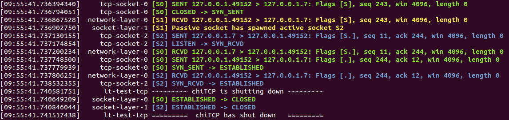
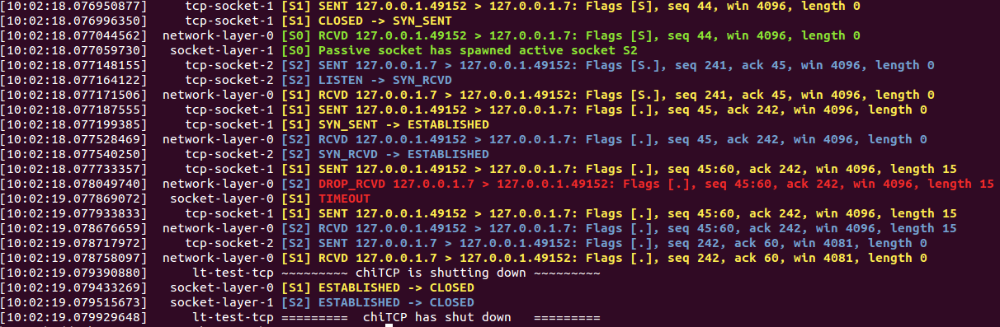

Testing your Implementation¶
We provide a number of automated tests and tools that you can use to test your implementation.
Automated tests¶
The tests for chiTCP are built by following the instructions in
Building. While this will build several test programs,
you will only have to use the test-tcp executable. Make sure
you re-build chiTCP any time you change your code, to make sure
the test-tcp executable is testing the latest version of your
code.
The test suite has multiple tests, divided into several categories. You can see a list of all the tests by running the following:
./test-tcp -l
You can run all the tests by running the following:
./test-tcp
Optionally, you can include the --verbose option to see the progress
of each test.
However, you should not do this until your project is nearly complete: most of the tests will fail by timing out and, given the high timeouts necessary for some of the tests, the above command can take a long time to run on an incomplete project. Instead, you should run the tests individually or by category.
Running and debugging individual tests¶
To run a single test, simply run the following:
./test-tcp --filter "TEST_CATEGORY/TEST_NAME"
Where TEST_CATEGORY is the category of the test, and TEST_NAME is the name
of the test (you can see both of these by running tests/test-tcp -l). For example,
this will run the first connection establishment test:
./test-tcp --filter "conn_init/3way_states"
If the test is succesful, you will see the following:
[====] Synthesis: Tested: 1 | Passing: 1 | Failing: 0 | Crashing: 0
If the test fails an assertion, a message will be printed out. For example:
[----] tests/test_tcp_conn_init.c:43: Assertion failed: Invalid transition: SYN_SENT -> CLOSED
In some tests, you may also see the following:
[FAIL] conn_init::3way_states: Timed out. (0.50s)
This means that the test did not finish running by some specified timeout (in this case, 0.5 seconds). This usually means your code has gotten stuck somewhere, and is not sending a packet that the tests were expecting.
When a test fails or times out, you will need to dig deeper to see what your code is doing during the test. We provide several mechanisms for you to do so.
Running categories of tests¶
To run entire categories of tests, simply run the following:
TCP connection establishment:
./test-tcp --filter "conn_init/*"
TCP connection termination:
./test-tcp --filter "conn_term/*"
TCP data transfer:
./test-tcp --filter "data_transfer/*"
Timer API:
./test-tcp --filter "multitimer/*"
TCP over an unreliable network:
./test-tcp --filter "unreliable_conn_init/*" ./test-tcp --filter "unreliable_conn_term/*" ./test-tcp --filter "unreliable_data_transfer/*" ./test-tcp --filter "unreliable_out_of_order/*"
The --filter option uses regular expressions, so you can further constrain the tests
that will be run. For example, to only run the “echo” tests from the data transfer
tests, you could run the following:
./test-tcp --filter "data_transfer/echo*"
Producing a grade report¶
To produce a grade report (showing how many points were scored in each test),
run make grade in the same directory where you built chiTCP. Make sure
you do so after running the tests (make grade will not run the tests
for you; it will simply analyze the test results, which are saved to a
results.json file by default, and determine your score based on that).
Note: make grade will still work if you ran the tests just for a subset
of the tests (e.g., by selecting just one category). In this case, any test
that was not run will be reported as scoring zero points.
Minimal logging¶
Parsing through all the detailed logging at the DEBUG and TRACE levels can be overwhelming,
and it can be hard to sift through so much information. You should first try using chiTCP’s
MINIMAL logging level (the messages at this level are generated directly by chiTCP; you should
never call chilog with this logging level). The MINIMAL logging level will log any changes
of state in a socket, as well as any packets received and sent by a socket (including important information
about the packet, like its sequence number, the size of the payload, etc.). The format is compact
and intended to be easy to read.
To run a test with MINIMAL logging, simply include LOG=MINIMAL before ./test-tcp. For example:
LOG=MINIMAL ./test-tcp --filter "conn_init/3way_states"
The output of this test (if successful) would look like this:
[09:55:41.736394340] tcp-socket-0 [S0] SENT 127.0.0.1.49152 > 127.0.0.1.7: Flags [S], seq 243, win 4096, length 0
[09:55:41.736794051] tcp-socket-0 [S0] CLOSED -> SYN_SENT
[09:55:41.736867528] network-layer-0 [S1] RCVD 127.0.0.1.49152 > 127.0.0.1.7: Flags [S], seq 243, win 4096, length 0
[09:55:41.736902750] socket-layer-1 [S1] Passive socket has spawned active socket S2
[09:55:41.737130155] tcp-socket-2 [S2] SENT 127.0.0.1.7 > 127.0.0.1.49152: Flags [S.], seq 11, ack 244, win 4096, length 0
[09:55:41.737174854] tcp-socket-2 [S2] LISTEN -> SYN_RCVD
[09:55:41.737200234] network-layer-0 [S0] RCVD 127.0.0.1.7 > 127.0.0.1.49152: Flags [S.], seq 11, ack 244, win 4096, length 0
[09:55:41.737748500] tcp-socket-0 [S0] SENT 127.0.0.1.49152 > 127.0.0.1.7: Flags [.], seq 244, ack 12, win 4096, length 0
[09:55:41.737779939] tcp-socket-0 [S0] SYN_SENT -> ESTABLISHED
[09:55:41.737806251] network-layer-0 [S2] RCVD 127.0.0.1.49152 > 127.0.0.1.7: Flags [.], seq 244, ack 12, win 4096, length 0
[09:55:41.738532355] tcp-socket-2 [S2] SYN_RCVD -> ESTABLISHED
[09:55:41.740581751] lt-test-tcp ~~~~~~~~~ chiTCP is shutting down ~~~~~~~~~
[09:55:41.740649209] socket-layer-0 [S0] ESTABLISHED -> CLOSED
[09:55:41.740846044] socket-layer-1 [S2] ESTABLISHED -> CLOSED
[09:55:41.741517438] lt-test-tcp ========= chiTCP has shut down =========
You should ignore the column containing tcp-socket-0, network-layer-0, etc. Instead focus on the [S0], [S1], etc.
which tells you what socket is producing this log message. The log message can be either SENT (the socket sent a packet),
RCVD (the socket received a packet), a state transition (two states separated by ->, or a message indicating that
a passive socket has spawned an active socket.
Whe a packet is sent or received, the log message will include the source IP and port, the destination IP and port, the
flags in the TCP header (S: SYN, F: FIN, .: ACK), the sequence number, the acknowledgement number,
the advertised window size, and the payload length. Please note that the sequence numbers are likely to be different
that shown in the above output, depending on how you set IRS and ISS.
We also provide a script that will colorize this output for extra readability. Just pipe the output of
the test to tests/colorize-minimal.sh:
LOG=MINIMAL ./test-tcp --filter "conn_init/3way_states" | ../tests/colorize-minimal.sh
You should see something like this:
In the tests that involve dropping packets, the colorize-minimal.sh script will highlight dropped
packets and timeouts in red. For example, if we run this:
LOG=MINIMAL ./test-tcp --filter "unreliable_data_transfer/drop_single_packet" | ../tests/colorize-minimal.sh
The output will look like this:
The DROP_RCVD message indicates that chiTCP simulated a dropped packet, and TIMEOUT indicates that
a TCP timeout has happened.
Other logging levels¶
To have a test print log messages from other log levels, simply set the LOG variable to the appropriate
level. For example:
LOG=DEBUG ./test-tcp --filter "conn_init/3way_states"
Producing a pcap file¶
Instead of reading through the log output, it can be useful to analyze the packets that were actually sent during the test. chiTCP can produce a “pcap” file that can be opened with Wireshark. This can help you verify whether all the values in the TCP packets are set to the correct values, since Wireshark will “dissect” your TCP packets just like it would any TCP packet (and will highlight any issues).
To produce a pcap file, simply include PCAP=FILENAME before tests/test-tcp, replacing
FILENAME with a name for the pcap file. For example, if we ran the following test,
which has packets arrive out of order:
PCAP=out_of_order.pcap ./test-tcp --filter "unreliable_data_transfer/out_of_order_1"
And then open out_of_order.pcap in Wireshark, we can see that it correctly detects
that one of the packets arrived out of order:
Finally, take into account that the tests/pcap/ directory contains pcap files generated
with the chiTCP reference solution. These files can give you a better sense of what the
expected behaviour is on any given test.
Using gdb to debug a test¶
To run gdb with a single test, you will need to run the test you want to debug in one terminal, and gdb in a separate terminal. First, run the test like this:
./test-tcp --debug=gdb --debug-transport=tcp:PORT --filter "TEST"
Replace TEST with the test you want to debug, and substitute PORT with a random port number.
By default, the tests will use 1234 but, if you are on a machine with multiple users, other users
may be trying to use that port.
Then, on another terminal, run this:
gdb ./test-tcp
On the GDB prompt, run this:
target remote localhost:PORT
Substituting PORT with the same port you used earlier.
Now, just use gdb as usual (note that you have to use the continue command instead
of the run command to ge the test running)
Running Valgrind on a test¶
To run Valgrind on a single test, run the following:
valgrind ./test-tcp --filter "TEST"
Replace TEST with the test you want to run.
Running the tests on machines with multiple users¶
The tests internally run the chiTCP daemon which, just like the
regular chitcpd executable, will need a TCP port and a UNIX socket.
If you are on a machine with multiple users, then more than more
user may try to use the default port (23300). As with chitcpd,
make sure you run the following on any terminal where you run the
tests:
export CHITCPD_PORT=30287 # Substitute for a different number
export CHITCPD_SOCK=/tmp/chitcpd.socket.$USER
Echo server and client¶
The automated tests will barrel through all the steps involved in each
particular test, which can make it hard to observe what happens at each
point. When you start developing your TCP implementation, we suggest you
use the echo-server and echo-client sample programs if you need
to run through your code step by step (these sample programs will
be built when you run make).
echo-server and echo-client are a basic implementation of an echo server
and client. The echo server creates a passive socket on port 7 and, when a
client connects on that port, every byte the client sends will be sent back
verbatim. It is a simple way of testing that basic operations, like connecting
or sending small messages, work correctly.
Take into account that echo-server and echo-client both use the chisocket
library. This means that you must run chitcpd on the same machine you’re running
echo-server and echo-client. Otherwise, the chisocket library will not work.
When testing with these applications, we suggest you run chitcpd with option
-vvv. This will print detailed output about what your TCP implementation is
doing, including changes in the TCP variables. Additionally, you can run
echo-server and echo-client with a -s option that will allow you to
“step through” the stages of the TCP connection. For example, if you run
echo-server -s, you should step through the following:
Press any key to create the socket...
Press any key to bind the socket...
Press any key to make the socket listen...
Press any key to accept a connection...
After that last message, the server will block, waiting for connections.
Then, run echo-client -s and step through the following:
Press any key to create the socket...
Press any key to connect to the server...
As your TCP implementation sends and receives the packets for the three-way
handshake, you should see several messages appear on the chitcpd log. For
example, if you are sending the SYN packet correctly from the client to the
server, you should see something like this:
>>> Handling event APPLICATION_CONNECT on state CLOSED
>>> TCP data BEFORE handling:
......................................................
CLOSED
ISS: 0 IRS: 0
SND.UNA: 0
SND.NXT: 0 RCV.NXT: 0
SND.WND: 0 RCV.WND: 0
Send Buffer: 0 / 4096 Recv Buffer: 0 / 4096
Pending packets: 0 Closing? NO
......................................................
<<< TCP data AFTER handling:
......................................................
SYN_SENT
ISS: 27 IRS: 0
SND.UNA: 27
SND.NXT: 28 RCV.NXT: 0
SND.WND: 0 RCV.WND: 4096
Send Buffer: 0 / 4096 Recv Buffer: 0 / 4096
Pending packets: 0 Closing? NO
......................................................
Please note that the actual values of the TCP variables will probably be
different. To make this output even more useful, you may want to use
chilog_tcp to print out the contents of (1) any TCP packet you send, and
(2) any TCP packets you extract from the pending_packets. If you do this,
the output of chitcpd would look like this:
>>> Handling event APPLICATION_CONNECT on state CLOSED
>>> TCP data BEFORE handling:
......................................................
CLOSED
ISS: 0 IRS: 0
SND.UNA: 0
SND.NXT: 0 RCV.NXT: 0
SND.WND: 0 RCV.WND: 0
Send Buffer: 0 / 4096 Recv Buffer: 0 / 4096
Pending packets: 0 Closing? NO
......................................................
Sending TCP packet
######################################################################
> Src: 49152 Dest: 7 Seq: 27 Ack: 0 Doff: 5 Win: 4096
> CWR: 0 ECE: 0 URG: 0 ACK: 0 PSH: 0 RST: 0 SYN: 1 FIN: 0
> No Payload
######################################################################
<<< TCP data AFTER handling:
......................................................
SYN_SENT
ISS: 27 IRS: 0
SND.UNA: 27
SND.NXT: 28 RCV.NXT: 0
SND.WND: 0 RCV.WND: 4096
Send Buffer: 0 / 4096 Recv Buffer: 0 / 4096
Pending packets: 0 Closing? NO
......................................................
If the connection is established correctly, you should see this on the echo server:
Got a connection from 127.0.0.1:49152
And the following on the echo client:
echo>
Now, if you type something and press Enter, and data transmission is correctly implemented, you should get a copy of the message back:
echo> Hello, world!
Hello, world!
If you do not get the same message back, an error message will be printed.
To close the connection on the client side, just press Control+D. You will see the following message:
Press any key to close connection...
After pressing a key, an active close will be initiated by the client, which
will send a FIN packet to the server. You will then see this on the server
side:
Peer has closed connection.
Press any key to close active socket...
This means the client has closed its side of the connection, but the server has
not. If you press any key, the server will send a FIN to the client. You
will then see this on the server:
Active socket closed.
Press any key to close passive socket...
Once you press any key, this will make the server stop listening on port 7.
Finally, both the client will prompt you to press any key to exit:
Press any key to exit...
The “simple tester”¶
The echo client and server can still be cumbersome for testing since they require running three different programs (chitcpd, echo-server, and echo-client) and staying on top of how each of them behaves.
So, we have an additional sample program, simple-tester, that runs a server and client simultaneously.
The client connects to the server, sends a single message, and then both of them initiate
a simultanous tear-down. This sample program is built along with the echo client/server
samples. To run it, make sure chitcpd is running (with option -vv as suggested earlier) and
then just run this from the samples directory:
./simple-tester
Assuming a correct TCP implementation, the simple tester will print out every TCP state transition during the communication, as well as the value of the TCP variables:
Socket 1: [SND.UNA = 225 SND.NXT = 226 RCV.NXT = 0] -> SYN_SENT
Socket 2: [SND.UNA = 99 SND.NXT = 100 RCV.NXT = 226] -> SYN_RCVD
Socket 1: [SND.UNA = 226 SND.NXT = 226 RCV.NXT = 100] SYN_SENT -> ESTABLISHED
Socket 2: [SND.UNA = 100 SND.NXT = 100 RCV.NXT = 226] SYN_RCVD -> ESTABLISHED
Socket 1: Sent 'Hello, chiTCP!'
Socket 2: Recv 'Hello, chiTCP!'
Socket 1: [SND.UNA = 226 SND.NXT = 240 RCV.NXT = 100] ESTABLISHED -> FIN_WAIT_1
Socket 2: [SND.UNA = 100 SND.NXT = 100 RCV.NXT = 240] ESTABLISHED -> FIN_WAIT_1
Socket 1: [SND.UNA = 240 SND.NXT = 241 RCV.NXT = 101] FIN_WAIT_1 -> CLOSING
Socket 2: [SND.UNA = 100 SND.NXT = 101 RCV.NXT = 241] FIN_WAIT_1 -> CLOSING
Socket 1: [SND.UNA = 241 SND.NXT = 241 RCV.NXT = 101] CLOSING -> TIME_WAIT
Socket 2: [SND.UNA = 101 SND.NXT = 101 RCV.NXT = 241] CLOSING -> TIME_WAIT
Socket 1: [SND.UNA = 241 SND.NXT = 241 RCV.NXT = 101] TIME_WAIT -> CLOSED
Socket 2: [SND.UNA = 101 SND.NXT = 101 RCV.NXT = 241] TIME_WAIT -> CLOSED
Socket 1 is the active opener, and Socket 2 is the passive opener (note: sometimes the active opener will get Socket 0). Although you may see different values for the Initial Sequence Number, the relative progression of the TCP variables should be the same. Similarly, the order of the state transitions may be slightly different than shown above.
Producing a pcap file¶
Similarly to how the tests produce a pcap file that can be opened with Wireshark,
you can also tell chitcpd to log all its packets to a pcap file. Simply run
chitcpd with a -c CAPFILE option. For example:
./chitcpd -c packets.cap
Wireshark dissector¶
We provide a Wireshark dissector, in the wireshark_dissector directory,
that you can use to easily see what is actually sent through the network
during a chiTCP connection. Please note that, if you need to look at the
packets sent during a given test or communication, producing a pcap
file is generally enough. However, if you need to go further down the
debugging rabbit hole, and see exactly what is being sent on the network,
you can use this dissector to actually look at the chiTCP traffic.
To install the dissector, follow these steps:
Make sure Lua with support for the “bit” library is installed. On Ubuntu, this requires installing the following packages:
lua5.2 lua-bitop
Copy the file
chitcp.luato~/.wireshark/pluginsLua plugins will not work if Wireshark is run as root. You will need to give your user permissions to perform network captures without having root privileges. If you are on a Debian/Ubuntu system, just follow these instructions:
http://ask.wireshark.org/questions/7523/ubuntu-machine-no-interfaces-listed
For other systems, there are general instructions here:
Using the dissector¶
Since, as far as Wireshark is concerned, the ChiTCP packet is application-level
data, we need to use a specific port so Wireshark will know what TCP packets
contain ChiTCP packets. The default is 23300, although this can be changed
in chitcp.lua.
Wireshark should automatically detect the new dissector. If you capture TCP packets, it should flag non-empty packets on port 23300 as ChiTCP packets. You should be able to see the ChiTCP header fields in human-readable format right below the TCP packet data. Wireshark will also helpfully dissect your TCP packet as well as its payload.
For example, this is what wireshark should look like if you use the sample echo server/client:
Wireshark running chiTCP dissector¶
Note how you can also apply the filter chitcp, and that will show only the
TCP packets that contain ChiTCP packets.